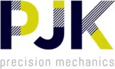
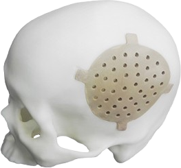

3D-Druck& CNC-Bearbeitung
Prototypen, technische Teile und Kleinserien, vom Einzelstück bis zur Produktion. SLS-, FDM- und SLA-3D-Druck, CNC-Fräsen, 3D-Scan und Modellierung: alles in unserer Werkstatt. Angebot innerhalb von 24 h.

Unsere Fertigungsverfahren
Das Verfahren richtet sich nach Ihrem Lastenheft: Festigkeit, Präzision, Oberflächengüte, Menge, Budget.
SLS
Robuste Funktionsteile aus Nylon, ohne Stützen. Komplexe Formen und Serien.
Entdecken →FadenablageFDM
Prototypen, Werkzeuge, große Teile und Mehrfarbigkeit. Von PLA bis PEEK und ULTEM.
Entdecken →StereolithografieSLA
Sehr hohe Auflösung, glatte Oberflächen, feine Details: Modelle und Sichtteile.
Entdecken →FräsenCNC
Präzise aus dem Vollen gefräste Teile: Aluminium, Messing, Bronze, Titan, technische Kunststoffe.
Entdecken →Digitalisierung3D-Scan
Reverse Engineering, Nachbau nicht mehr erhältlicher Teile, Formprüfung.
Entdecken →LasergravurLaser
Personalisierung, Markierung, Nummerierung, Schneiden und Beschilderung.
Entdecken →Gebohrter Flansch Ø80Zum Drehen ziehen
Die Maschinen der Werkstatt

Supermaker SLS1518
Supermaker SLS1518: kompakter industrieller SLS-Druck, Bauraum 150×150×180 mm, PA11, PA12, TPU, CF, GF, integriertes Pulverrecycling. O&D, Lüttich.
Datenblatt öffnen →
Supermaker SLS3540 Pro
Supermaker SLS3540 Pro: großformatiger industrieller SLS-Druck, Bauraum 350×350×430 mm, PA11, PA12, TPU, CF, GF, integriertes Pulverrecycling. O&D…
Datenblatt öffnen →
Bambu Lab H2C
Der Bambu Lab H2C druckt im FDM-Verfahren mit bis zu 24 Farben, ideal für mehrfarbige Teile und Multimaterialteile. Erhältlich bei O&D Impression 3D in…
Datenblatt öffnen →
Bambu Lab X1C
Bambu Lab X1C: Hochgeschwindigkeits-FDM-Druck, Bauraum 256×256×256 mm, ideal für Serienfertigung und Rapid Prototyping. O&D Impression 3D…
Datenblatt öffnen →
Prusa Core One
Prusa Core One: industrieller FDM-Drucker für ASA, ABS, PC und PA, für Ihre Prototypen und Kleinserien. Bei O&D Impression 3D in…
Datenblatt öffnen →
Modix Big Meter
3D-Druck in sehr großem Format mit dem Modix Big Meter. XXL- und Multimaterialteile bei O&D Impression 3D in Lüttich, Belgien.
Datenblatt öffnen →Sie haben uns ihre Teile anvertraut





Materialien, von PLA bis PEEK
29 ausführliche Werkstoffblätter: Eigenschaften, Vorteile, Grenzen und kompatible Maschinen.





Von der Datei zum Teil
Senden
STEP-, STL- oder 3MF-Datei, Zeichnung, Skizze… oder das zu scannende Teil.
Analyse & Angebot
Sofort mit 3D-Datei, individuell innerhalb von 24 h.
Fertigung
Verfahren und Werkstoff je nach Ihren Anforderungen.
Lieferung
Versand oder Abholung in der Werkstatt in Welkenraedt.
Unsere Projekte

Polypropylen-Teil für eine Logopädin
Maßgefertigtes Therapiewerkzeug für eine Logopädin, im 3D-Druck aus Polypropylen nachgebaut und an die Bedürfnisse der Patienten angepasst. O&D-Projekt…
Datenblatt öffnen →
Fleischwolf-Zahnrad im 3D-Druck nachgebaut
Gebrochenes Fleischwolf-Zahnrad in PLA nachgebaut: Reverse Engineering in 1 h, Teil in weniger als 48 h fertig. Ein Projekt von O&D Impression 3D, Welkenraedt.
Datenblatt öffnen →
Audi-S3-Teile in PAHT-CF nachgebaut
Nachbau beschädigter Audi-S3-Teile in PAHT-CF und PLA: Stoßstangengitter und S3-Logoabdeckungen. Ein Projekt von O&D Impression 3D, Lüttich.
Datenblatt öffnen →
Infrabel-Modell
3D-gedruckte Miniaturschienen aus PLA für das Einweihungsmodell von Infrabel. Ein Projekt von O&D Impression 3D, Werkstatt in Welkenraedt (Lüttich).
Datenblatt öffnen →
Hockerfüße
40-cm-Hockerfüße aus schwarzem PLA, maßgedruckt für Airbnb-Ferienhäuser in Herve: 24 h pro Teil, Prototyp gratis. O&D-Projekt…
Datenblatt öffnen →
Zaunspitze in ASA nachgebaut
Gebrochene dekorative Zaunspitze, anhand von Fotos neu konstruiert und in UV-beständigem ASA auf einem Bambu Lab X1C nachgedruckt. O&D-Projekt, Welkenraedt.
Datenblatt öffnen →Messen und Veranstaltungen
Wir gehen auf die Industrie zu: Euronaval für Marine und Verteidigung, Formnext für additive Fertigung, Batibouw für das Bauwesen.


Ihr Projekt vorbereiten
Quiz: welche Technologie?
Ein paar Fragen, um herauszufinden, welches Verfahren zu Ihrem Teil passt.
Öffnen →WerkzeugSofortangebot
STL hochladen, Werkstoff wählen: sofortige Schätzung.
Öffnen →WerkzeugWerkstoffvergleich
PLA vs. PETG, PEEK vs. PEKK vs. Ultem, FDM vs. SLS vs. SLA…
Öffnen →WerkzeugRatgeber Werkstoffe & Technologien
Der komplette Ratgeber zur Wahl von Verfahren und Werkstoff.
Öffnen →Ein Teil zu fertigen?
Senden Sie Ihre 3D-Datei oder beschreiben Sie Ihren Bedarf: Sofortangebot mit Datei, individuelles Angebot innerhalb von 24 h.